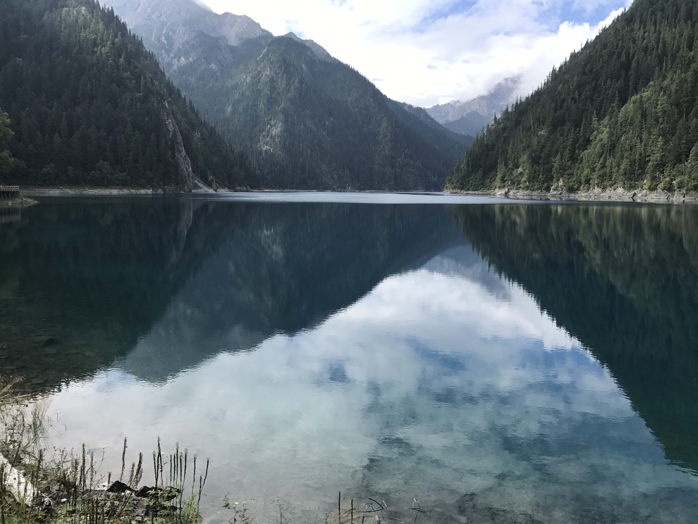

👩‍🍳An Amatuer Cook
I have just started cooking coming in Ann Arbor last summer. It was a challenge for me at first, but I sooner fell in love with cooking! I am still an complete begninner at cooking, but I will learn more and try more new cooking afterwards!




✈️Places I have been to...
I love travelling. Although being limited to time and money, I am not able to go every where I want to. I have been to many cities in China, South Korea, Thailand in Asia, Austria, Hungary, Czech in Europe, and several cities in U.S.